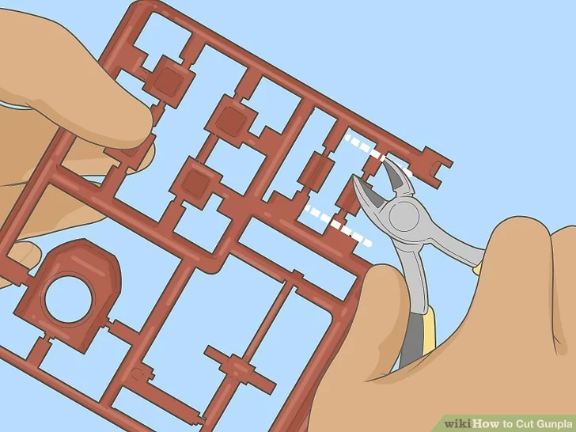

Model kits typically arrive in the form of runners,pictured below, the pieces need to be cut off them for assembly.
Improper cuts however can lead to very bad stress marks. The most essential tool is a pair of side cutting pliers and a hobby knife is optional but recommended
Begin by selecting your piece and turning the pliers backwards to snip just above the connection, illustrated in the image below.
afterwards your pieces should look like this
Next, take a piece that from the pile and flip your pliers so that the flat edge is down and slide the jaws under the nub. now you can cut directly where the nub meets the piece. Before the sprue was strong enough it would transfer stress to the piece causing the ugly marks above. Afterwards sand down any remaining marks with 800 grit sandpaper and take care not to sand any details away, once this is done the 800 grit sandpaper probably left a scratch or two. So now its time to use the 2000 grit sandpaper to to polish the piece and that should remove any scratches.
Not all nippers (side-cutting pliers) are created equal. The most commonly found variety are the double bladed nippers.
Single Bladed Nippers have a blade on one side and a flat edge on the other, this allows stress to only be applied on one side, additionally, Single Bladed Nippers tend to have a thinner sharper blade, making the cuts even cleaner.
This combination of factors makes single-bladed nippers cut very cleanly so that minimal nub removal work through sanding or cutting with a hobby knife is required.